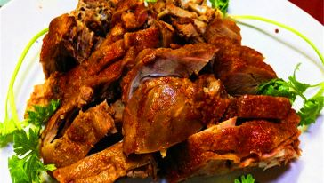

岚谷熏鹅
岚谷熏鹅在武夷山相当有名，来武夷山旅游必吃的一道菜。挑选肥瘦适中的鹅，将鹅煮熟，再抹上辣椒粉、盐、味精、油、用糯米、桂叶、茶叶等熏制。熏鹅皮质酥脆，鹅肉紧致香嫩，融合了茶香，桂叶香，糯米香及麻辣香 。

色：烘烤熏制后的鹅肉色泽金黄透亮，给人以一种想占有的欲望。
香：正宗的岚谷熏鹅是经过长时间熏制而出，鹅肉融入了茶香、桂叶香及糯米香味，因而香味持久，浓浓的香熏味也掩盖不了麻辣香。
味：岚谷熏鹅讲究的一个辣字，辣味持久不退，久后回甘。
制作方法：
第一步，选鹅是关键，鹅的要求：
1.鹅不宜太肥也不宜太瘦；
2.重量大约在2-3斤为佳；
3.选择的鹅必须是无疾病的。
第二步，将鹅宰杀、除毛、洗净后，将整只鹅放进锅里用清水煮20--30分钟，七八分熟（即鹅肉色泽微黄，鹅肉弹性强，筷子戳不穿鹅肉），将鹅取出锅，将鹅肉上的水分沥干。
第三步，将沥干水分后的鹅肉，全身涂抹上椒，盐等调味料，将鹅肉固定好放置专门烤箱熏制（烤箱内备有糯米、桂叶、茶叶，用文火将糯米烤焦出的烟熏制）七八小时，直至鹅肉融入了各种香料味，香味四溢，此时的鹅皮金黄透亮。口味稍偏重的可再在鹅肉上刷一道辣椒粉，则辣味十足。
小贴士：岚谷熏鹅适用于一般身体健康人群，身体虚弱、营养不良的群体尽量少食。有皮肤病（温热内蕴者、皮肤疮毒、瘙痒症者）、痼疾者、高血压病、动脉硬化的人群忌食。
与鹅肉相克的食物：柿子、鸭梨、鸡蛋。 食岚谷熏鹅时，实在受不了辣味，可食用酸奶，可快速解辣。